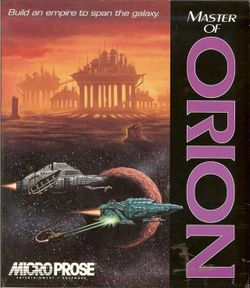

This is the first game in the Master of Orion series. For other games in the series see the Master of Orion category.
{kind=link}

| Master of Orion | |
|---|---|
| Developer(s) | Simtex |
| Publisher(s) | MicroProse Software |
| Year released | 1993 |
| System(s) | DOS, Mac OS, Windows, macOS, Linux |
| Followed by | Master of Orion II: Battle at Antares |
| Series | Master of Orion |
| Genre(s) | Turn-based strategy |
|---|---|
| Players | 1+ |
| Modes | Single player, Multiplayer |
Master of Orion (MOO1) is the first in the Master of Orion series. It was developed by Simtex; Steve Barcia and Ken Burd designed it. The game was designed to use MS-DOS and was published by MicroProse in 1993. Most reviews by critics and players were very favorable.
The game begins with a single colonized homeworld, a colony ship, and two scout ships that can be used to explore nearby stars. As the game progresses, new worlds are discovered, other races encountered, worlds colonized and wars fought. Despite their different backgrounds and homeworlds, all races possess legends of the Orions, a master race that once controlled the galaxy, and their protected homeworld containing powerful secrets and technology. The homeworld is found in the Orion star system and is defended by a powerful robotic starship, the Guardian.
Copy Protection[edit | edit source]
This game is copy protected, requiring the player to look up content found in one of the manuals. This copy protection appears after a random number of turns, and will drop the player to the main menu if failed.
There are reports of said protection appearing in the Steam version. If it appears, it accepts any answer instead of the correct one, even though the reference card is found in the main directory.
Table of Contents
- Technology tree
- Computers
- Construction
- Force Fields
- Planetology
- Propulsion
- Weapons
- Game stages
- Key techs
- Techs always available
- Tech trading
- Comparative tree
- Preparing yourself for war
- Warship design
- Killing the Guardian
- General battle tactics
- Winning defensive battles
- Winning with beam weapons
- Winning with missiles
- Winning with invasion
- Invade and Capture Techs
- Managing newly conquered colonies
- Interplanetary reserve
- Game roadmap